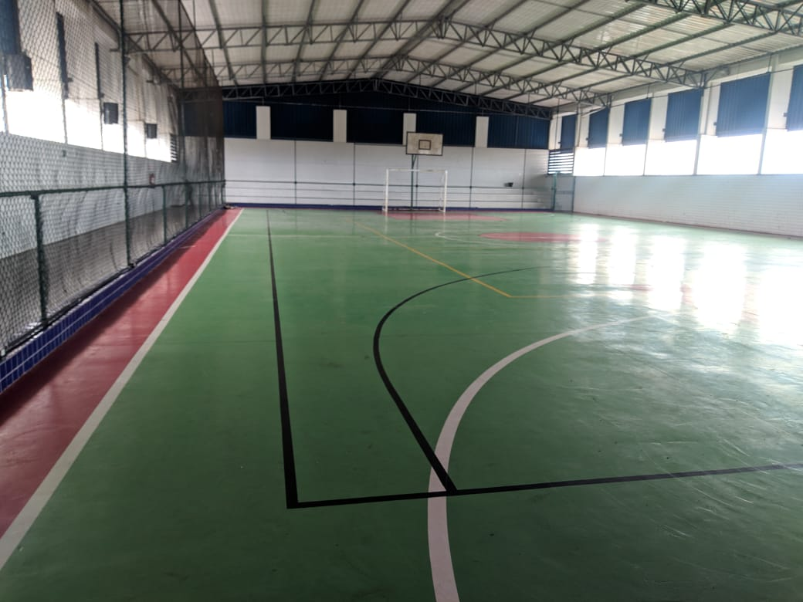
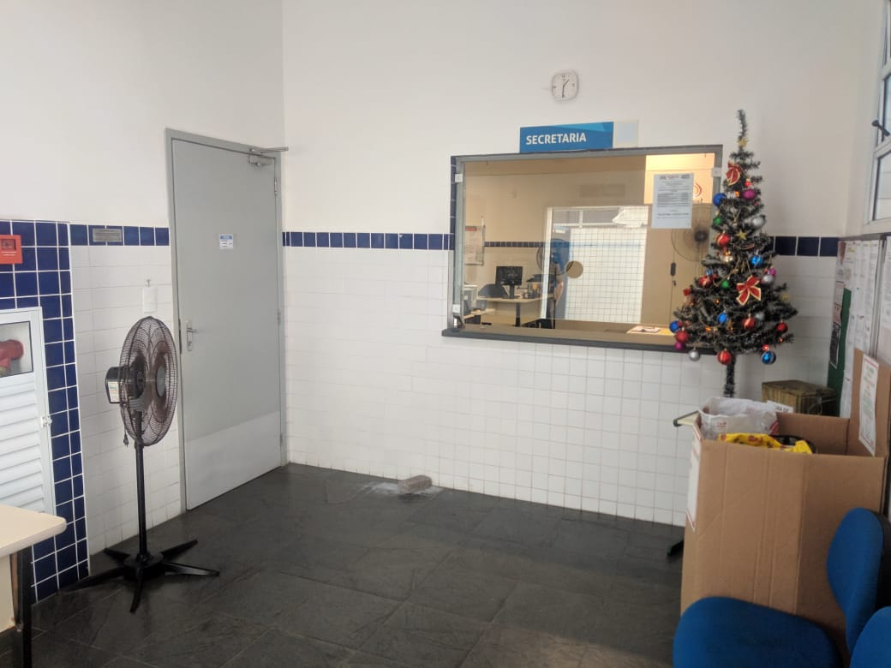
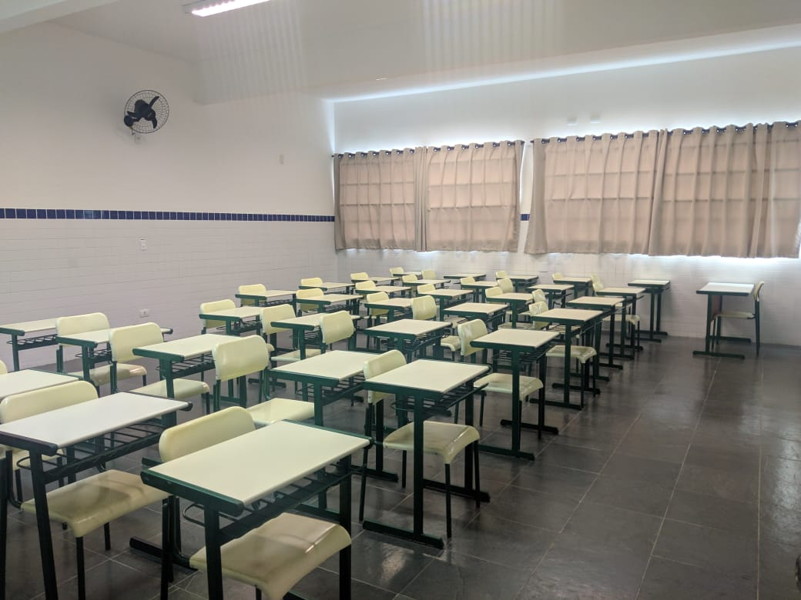
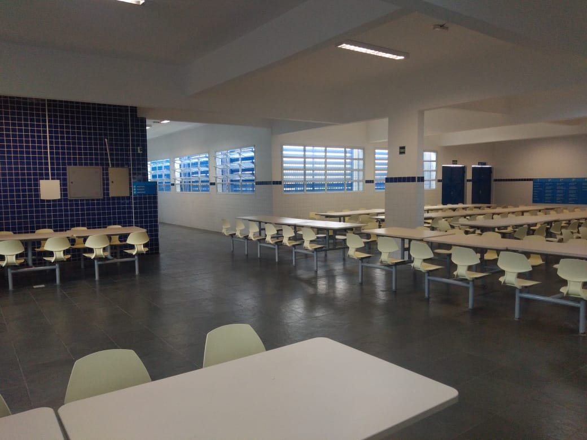
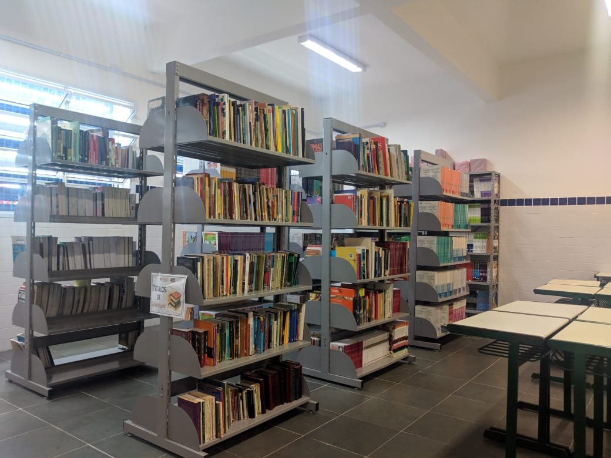

Galeria da escola






Ensino técnico integrado ao ensino médio.
O processo de criação de sites e o de desenvolvimento de programas que podem ser utilizados em páginas na internet. Para programar, o aluno vai estudar raciocínio lógico e linguagens de programação, que utiliza comandos para desenvolver funcionalidades e dar forma a um site. Além disso, o estudante aprenderá um pouco de design com o objetivo de tornar a página mais agradável e fácil de ser utilizada. O aluno aprenderá ainda como criar e alterar bancos de dados que vão alimentar os sites. Noções de marketing digital para a web e de empreendedorismo também serão ensinadas ao longo do curso.
Cria websites de acordo com as necessidades do cliente, identificando e sugerindo as melhores soluções; faz a manutenção de portais, sites e intranets; cuida da identidade visual das páginas de uma empresa; faz a customização de plataformas de conteúdo para web, como blogs e sites de comércio eletrônico; cria e realiza manutenção de bancos de dados para websites; adapta as páginas para abrigar vídeos, áudios e funções que facilitem a acessibilidade, como comandos de voz, por exemplo; trata e otimiza imagens para uso na internet; e prepara o layout de mensagens que são enviadas por e-mail (newsletter ou e-mail marketing), entre outras atividades.
Esse profissional trabalha em empresas de desenvolvimento de sites ou de sistemas e empresas de marketing digital. O técnico também pode trabalhar por conta própria, como freelancer, prestando serviço a outras empresas.
O técnico em Segurança do Trabalho é o profissional que atua em ações prevencionistas nos processos produtivos com auxílio de métodos e técnicas de identificação, avaliação e medidas de controle de riscos ambientais, de acordo com a legislação brasileira, normas regulamentadoras e princípios de higiene, saúde e segurança do trabalho. Desenvolve ações educativas na área de saúde e segurança do trabalho. Orienta o uso de EPI e EPC. Coleta e organiza informações de saúde e de segurança no trabalho. Avalia e executa diversos programas de prevenção em SST, inclusive PPRA (Programa de Prevenção de Riscos Ambientais). Investiga, analisa acidentes e recomenda medidas de prevenção e controle.
O profissional pode trabalhar em empresas públicas e privadas, como indústrias, hospitais, empresas comerciais, mineradoras, de construção civil e área rural.
O técnico em Marketing é o profissional que colabora na elaboração do plano de marketing da empresa, de acordo com seu ramo ou porte, tendo a competência aliada ao domínio técnico e no planejamento e implementação de ações de vendas e ações de mercado. Executa tarefa de análise das vendas, preços e produtos. Operacionaliza as políticas de comunicação da empresa: fidelização de clientes, relação com fornecedores ou outras entidades. Operacionaliza políticas de apresentação dos produtos no ponto de venda. Executa o controle, estatísticas e operações de telemarketing. Participa na elaboração e na realização de estudos de mercado, interpreta e aplica a legislação da área.
Esse profissional pode trabalhar em instituições públicas, privadas e do terceiro setor; comércio e empresas de consultoria ou pode ser um profissional autônomo.
Adota postura ética na execução da rotina administrativa, na elaboração do planejamento da produção e materiais, recursos humanos, financeiros e mercadológicos. Realiza atividades de controles e auxilia nos processos de direção utilizando ferramentas da informática básica. Fomenta ideias e práticas empreendedoras.
Áreas da Indústria, Comércio, Prestação de Serviços, em empresas em geral de pequeno e médio portes.
Ensino técnico
Como funcionam as organizações, desde empresas privadas até ONGs, passando por órgãos públicos, comércio e indústria. O estudante vai precisar de conhecimentos de língua portuguesa, matemática, história e geografia para compreender os principais assuntos do curso, como história da administração, evolução das organizações ao longo do tempo, contabilidade, leis que regulam o funcionamento das empresas e redação de documentos. O aluno vai aprender ainda a analisar as chances de um negócio ou produto ser bem-sucedido e o comportamento do consumidor. Estudará também técnicas de atendimento ao cliente, empreendedorismo (iniciativas para realizar novos negócios) e como uma organização planeja alcançar seus objetivos e define suas metas para o futuro.
O técnico em Administração pode trabalhar em vários departamentos. No setor de compras, por exemplo, pode elaborar pedidos de compra de produtos, cadastrar fornecedores assim como conferir a entrega das mercadorias adquiridas. Na área de produção, pode fazer planilhas de controle de processos e produtos, registrando quais já foram produzidos e em qual quantidade. No departamento de vendas, também pode elaborar planilhas para acompanhar o desempenho das vendas, cadastrar clientes, preencher notas fiscais e gerar boletos bancários. No setor de Recursos Humanos, o técnico pode trabalhar calculando salários e benefícios dos funcionários e auxiliando nos processos de contratação e demissão de pessoal. Em qualquer área, pode atender clientes e fornecedores e redigir documentos, como e-mails, memorandos e atas.
Como o técnico em Administração tem uma formação que inclui vários assuntos diferentes, o profissional encontra oportunidades de emprego em diversos tipos de empresas e departamentos.
Empresas privadas, seja de comércio, serviço ou indústria, órgãos públicos (prefeituras, secretarias de governo, ministérios do governo federal etc.) e ONGs.
O processo de criação de sites e o de desenvolvimento de programas que podem ser utilizados em páginas na internet. Para programar, o aluno vai estudar raciocínio lógico e linguagens de programação, que utiliza comandos para desenvolver funcionalidades e dar forma a um site. Além disso, o estudante aprenderá um pouco de design com o objetivo de tornar a página mais agradável e fácil de ser utilizada. O aluno aprenderá ainda como criar e alterar bancos de dados que vão alimentar os sites. Noções de marketing digital para a web e de empreendedorismo também serão ensinadas ao longo do curso.
Cria websites de acordo com as necessidadesdo cliente, identificando e sugerindo as melhores soluções; faz a manutenção de portais, sites e intranets; cuida da identidade visual das páginas de uma empresa; faz a customização de plataformas de conteúdo para web, como blogs e sites de comércio eletrônico; cria e realiza manutenção de bancos de dados para websites; adapta as páginas para abrigar vídeos, áudios e funções que facilitem a acessibilidade, como comandos de voz, por exemplo; trata e otimiza imagens para uso na internet; e prepara o layout de mensagens que são enviadas por e-mail (newsletter ou e-mail marketing), entre outras atividades.
Estudar Informática para Internet não significa passar as aulas navegando na web. O curso ensina os alunos a pensar soluções para a internet. É importante usar a criatividade para encontrar a melhor proposta para cada site ou cliente.
Empresas de desenvolvimento de sites ou de sistemas e empresas de marketing digital. O técnico também pode trabalhar por conta própria, como freelancer, prestando serviço a outras empresas.
Ensino técnico integrado ao ensino médio.
Ensino técnico
Entre em contato conosco!